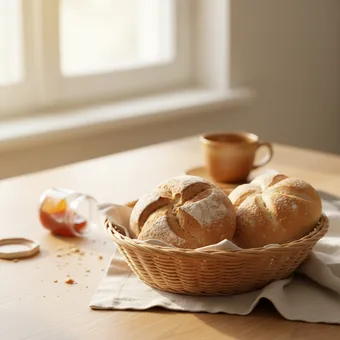
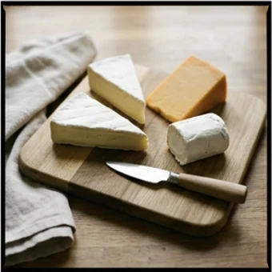
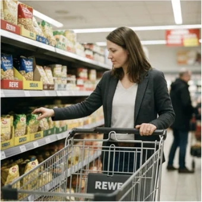
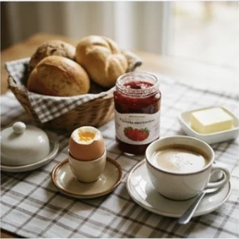
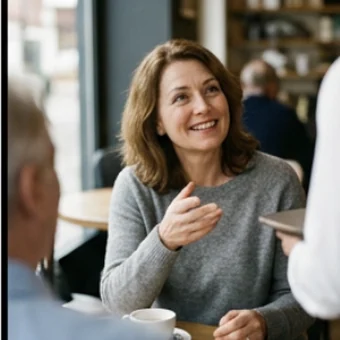
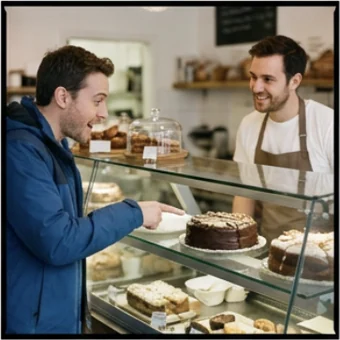
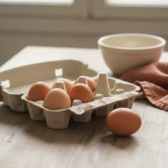
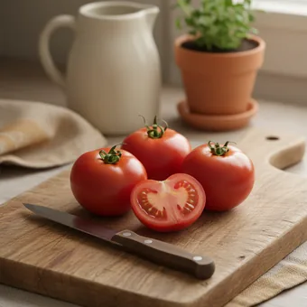

Sechs Brötchen, zweihundert Gramm Käse, mit Karte zahlen. Nach dieser Stunde bestellst du an der Theke, ohne den Satz vorher im Kopf zu üben — und du weißt, was du sagst, wenn es plötzlich schneller geht.
Dein Niveau
Gleiches Thema, andere Sätze. Wechsle jederzeit — probier ruhig beides.
Samstagmorgen, halb zehn
Schaut euch das Bild an. Sieben Leute vor dir, und gleich bist du dran.
Was kaufst du am liebsten beim Bäcker?
Gehst du lieber zum Bäcker oder in den Supermarkt? Warum?
Bezahlst du meistens mit Karte oder mit Bargeld?
Was war dein peinlichster Moment beim Einkaufen auf Deutsch?
Warum ist die Bäckerei für viele Deutsche mehr als nur ein Laden?
Woran merkst du beim Einkaufen sofort, dass du in einem anderen Land bist?
🗣️ Sprecht reihum: „Ich kaufe am liebsten …, weil …“ · „Bei uns zu Hause gibt es das gar nicht.“ · „Am Anfang war für mich am schwierigsten, dass …“
Und dann kommt die Frage
Genau hier steigen die meisten aus: „Sonst noch was?“ — und plötzlich fällt einem nichts mehr ein.
Was antwortest du, wenn du fertig bist — und was, wenn du noch etwas möchtest?
Was machst du, wenn du den Namen von etwas nicht weißt?
Wie fragst du nach, wenn du die Verkäuferin nicht verstanden hast?
👀 Zu zweit: Erzählt euch gegenseitig euren letzten Einkauf — wo, was, wie viel, wie bezahlt. Vier Sätze reichen. Wer stockt, zeigt einfach auf ein Wort aus dem nächsten Abschnitt.
Zwölf Wörter, die in jedem Laden gehen
Sagt jedes Wort laut — und gleich den Beispielsatz dazu. Genau diese Sätze brauchst du an der Theke.

das Brötchen
„Ich hätte gern sechs Brötchen, bitte.“
💡 Plural: die Brötchen. Bei zählbaren Dingen sagst du nur die Zahl — nicht „sechs Stück Brötchen“.
die Scheibe
„Zehn Scheiben Schinken, bitte.“
💡 Für alles, was dünn geschnitten wird: Brot, Käse, Wurst. Plural: die Scheiben.

das Gramm
„Zweihundert Gramm Gouda, bitte.“
💡 Bleibt immer im Singular: 200 Gramm, nicht „Gramme“. 1000 Gramm sind ein Kilo.
die Packung
„Ich nehme eine Packung Butter.“
💡 Dazu passen: die Flasche, die Tüte, der Becher, die Dose. Sag immer die Verpackung mit.

der Einkaufswagen
„Für den Einkaufswagen brauchst du einen Euro.“
💡 Der Euro ist Pfand — du bekommst ihn zurück. Kleiner Bruder: der Einkaufskorb.
der Kassenbon
„Brauchen Sie den Kassenbon? — Ja, gern.“
💡 Auch: der Beleg, die Quittung. Heb ihn auf — ohne Bon kein Umtausch.
💳
die Karte
„Ich zahle mit Karte.“
💡 Ohne Artikel nach mit: mit Karte, mit Bargeld. Manche kleinen Läden nehmen nur Bargeld — frag lieber vorher.
das Bargeld
„Nehmen Sie auch Bargeld? — Natürlich.“
💡 Kein Plural. Umgangssprachlich sagt man auch: in bar zahlen.

frisch
„Ist das Brot noch frisch von heute?“
💡 Adjektiv. Gegenteil: alt, vom Vortag. Beim Bäcker eine ganz normale Frage — niemand nimmt sie übel.
das Angebot
„Der Käse ist gerade im Angebot.“
💡 Feste Wendung: etwas ist im Angebot = diese Woche billiger. Auf dem Schild steht oft nur „Aktion“.
🥡
die Tüte
„Brauchen Sie eine Tüte? — Nein danke, ich habe eine.“
💡 Tüten kosten fast überall Geld. Wer eine eigene Tasche mitbringt, spart und wird freundlich angeschaut.

Sonst noch was?
„Nein danke, das war’s.“
💡 Die Standardfrage der Verkäuferin. Deine Antwort: „Ja, außerdem …“ oder „Nein danke, das war’s.“
💡 Spiel: Verdeckt die Wörter. Eine Person beschreibt eines („So ein Papierding, das man nach dem Bezahlen bekommt …“), die anderen raten — und sagen sofort einen Bestellsatz dazu.
Mengen: Stück, Gramm, Scheibe
Der häufigste Fehler beim Einkaufen ist nicht die Grammatik, sondern die Menge. Diese vier decken fast alles ab.
✅ Zählbar
Drei Brötchen, bitte.
MerksatzBei Dingen, die man zählen kann, sagst du nur die Zahl.
❌ So nicht
Drei Stück Brötchen, bitte.
Warum„Stück“ braucht man hier nicht — es klingt nach Verpackung, nicht nach Bäcker.
✅ Gewicht
Zweihundert Gramm Käse.
MerksatzGramm und Kilo bleiben immer im Singular.
❌ So nicht
Zweihundert Gramme Käse.
WarumMaßeinheiten bekommen im Deutschen kein Plural-e. Genauso: fünf Kilo, drei Liter.
🍞
die Scheibe
dünn geschnitten
Fünf Scheiben Käse, bitte.
📦
die Packung
fertig verpackt
Eine Packung Butter, bitte.
🥛
die Flasche
alles Flüssige
Zwei Flaschen Wasser, bitte.
Grobe Orientierung fürs erste Mal:
Aufschnitt für eine Person, eine Woche: 150–200 Gramm
Käse am Stück: 200 Gramm reichen für mehrere Tage
Brötchen zum Frühstück: zwei pro Person
Und wenn es zu viel wird: „Ein bisschen weniger, bitte.“ Das sagt man ständig, das ist kein Problem.
⚖️ Zu zweit üben: Einer sagt ein Lebensmittel, der andere bestellt es mit einer passenden Menge. Käse → „Zweihundert Gramm Gouda, bitte.“ Wasser → „Zwei Flaschen, bitte.“ Zehn Runden, dann tauschen.
Die Sätze, die immer gehen
Kurz, freundlich, richtig. Mit diesen kommst du durch jeden Einkauf — ohne dass du vorher überlegen musst.
❓ Fragen Haben Sie …?Was kostet …?Ist das frisch?Wo finde ich …?
So klingt esHaben Sie noch frisches Brot?
✋ Beenden & zahlen Nein danke, das war’s.Das ist alles.Ich zahle mit Karte.Zusammen, bitte.
So klingt esNein danke, das war’s. Ich zahle mit Karte.
🆘 Wenn du nicht verstehst Wie bitte?Können Sie das wiederholen?Etwas langsamer, bitte.
So klingt esEntschuldigung, können Sie das bitte wiederholen?
🥐 Bestellen — mit einer Nuance Ich hätte gern …, wenn es geht.Können Sie mir bitte … geben?Ich nehme lieber …Machen Sie mir bitte …
So klingt esKönnten Sie mir bitte zweihundert GrammGouda geben — eher dünn geschnitten?
🔁 Korrigieren, ohne unhöflich zu werden Ein bisschen weniger, bitte.Darf es etwas mehr sein? — Ja, passt.Entschuldigung, ich hatte … gesagt.
So klingt esEntschuldigung, ich hatte eigentlich zweihundertgesagt — geht das noch?
🧠 Wenn dir das Wort fehlt So ein Ding, mit dem man …Das, was man zum … brauchtWie heißt das noch mal — das für …?
So klingt esWie heißt das noch mal — so ein Papier, das man nach dem Bezahlen bekommt?
⚡ Wenn etwas nicht stimmt Da stimmt etwas nicht.Könnten Sie das bitte prüfen?Ich glaube, da hat sich ein Fehler eingeschlichen.
So klingt esEntschuldigung, da stimmt etwas nicht — könnten Sie das bitte noch mal prüfen?
Verb das, was du bekommst Menge Höflichkeit
🗣️ Sofort anwenden: Jeder sagt drei Bestellsätze hintereinander, ohne zu stocken. Erst dann darf der Nächste. Es geht nicht um schön — es geht um flüssig.
Vier Dialoge — zwei Runden
Runde 1: Lest den ganzen Dialog zu zweit. Runde 2: Tippt auf den Knopf — deine Sätze verschwinden, du siehst nur noch, was du sagen sollst. Steckst du fest, tippe auf das gelbe Feld.

Dialog 1 · „Beim Bäcker“
Samstagmorgen. Du bist dran. Hinter dir warten noch vier Leute.
A
Guten Morgen! Was darf es sein?
B
Guten Morgen. Ich hätte gern sechs Brötchen und ein Bauernbrot, bitte.
🗣️ Grüß zurück und bestell zwei Dinge — mit Menge.tippen = Hilfe zeigen
A
Das Brot geschnitten oder am Stück?
B
Geschnitten, bitte. Ist es noch frisch von heute?
🗣️ Antworte kurz — und stell eine Rückfrage zur Frische.tippen = Hilfe zeigen
A
Heute Morgen gebacken. Sonst noch was?
B
Ja, außerdem zweihundert Gramm Gouda, bitte.
🗣️ Sag, dass du noch etwas möchtest — mit Gewicht.tippen = Hilfe zeigen
A
Zweihundertzwanzig — darf’s ein bisschen mehr sein?
B
Ja, passt. Das war’s dann, danke.
🗣️ Stimm zu und beende die Bestellung.tippen = Hilfe zeigen
A
Dann macht das 9,40 €. Zahlen Sie bar oder mit Karte?
B
Mit Karte, bitte. Und eine Tüte brauche ich nicht, danke.
🗣️ Sag, wie du zahlst — und lehn die Tüte höflich ab.tippen = Hilfe zeigen
Dialog 2 · „Im Supermarkt, an der Kasse“
Dein Einkaufswagen ist voll, du hast eine Sache nicht gefunden — und an der Kasse geht es schnell.
B
Entschuldigung, wo finde ich die Milch?
🗣️ Sprich jemanden höflich an und frag nach einem Produkt.tippen = Hilfe zeigen
A
Ganz hinten links, im Kühlregal neben dem Joghurt.
B
Vielen Dank! Ist der Käse dort auch im Angebot?
🗣️ Bedank dich und frag nach dem Angebot.tippen = Hilfe zeigen
A
Diese Woche ja, der Gouda. Steht auf dem gelben Schild.
A
So, das macht 23,60 €. Brauchen Sie eine Tüte?
B
Nein danke, ich habe eine dabei. Ich zahle mit Karte.
🗣️ Lehn die Tüte ab und sag, wie du zahlst.tippen = Hilfe zeigen
A
Kassenbon?
B
Ja, gern. Entschuldigung — ich glaube, der Käse war im Angebot, könnten Sie das kurz prüfen?
🗣️ Nimm den Bon — und sprich freundlich an, dass der Preis nicht stimmt.tippen = Hilfe zeigen
Dialog 3 · „An der Käsetheke“
Hier wird abgewogen. Es geht selten genau auf — und genau darauf musst du antworten können.
A
Der Nächste, bitte! Was darf ich Ihnen geben?
B
Ich hätte gern zweihundert Gramm Gouda, bitte.
🗣️ Bestell mit Gewicht — und sag die Sorte dazu.tippen = Hilfe zeigen
A
Am Stück oder geschnitten?
B
Geschnitten, bitte — eher dünn.
🗣️ Antworte kurz und sag, wie du es haben willst.tippen = Hilfe zeigen
A
Zweihundertvierzig Gramm — darf’s ein bisschen mehr sein?
B
Ein bisschen weniger, bitte. Zweihundert reichen mir.
🗣️ Sag freundlich Nein — und nenn deine Menge noch einmal.tippen = Hilfe zeigen
A
Kein Problem. Sonst noch etwas?
B
Ja, außerdem fünf Scheiben Schinken. Und sind die Eier von hier?
🗣️ Bestell noch etwas mit Scheiben — und stell eine Rückfrage.tippen = Hilfe zeigen

A
Ja, vom Hof nebenan. Zusammen 7,80 €.
B
Dann nehme ich noch sechs. Das war’s, danke.
🗣️ Entscheide dich und beende die Bestellung.tippen = Hilfe zeigen
Dialog 4 · „Mir fällt das Wort nicht ein“
Du suchst etwas und weißt den Namen nicht. Beschreiben ist die wichtigste Fähigkeit überhaupt.
B
Entschuldigung, könnten Sie mir helfen? Ich suche etwas und weiß den Namen nicht.
🗣️ Sprich jemanden an und sag ehrlich, dass dir das Wort fehlt.tippen = Hilfe zeigen
A
Klar, beschreiben Sie es einfach.
B
Es ist so ein kleines Tütchen. Man tut es in den Teig, dann geht er auf.
🗣️ Beschreib das Ding: Wie sieht es aus, wofür braucht man es?tippen = Hilfe zeigen
A
Ah, Sie meinen Hefe. Gang vier, bei den Backsachen.
B
Hefe, genau — vielen Dank! Und wo finde ich die Tomaten?
🗣️ Wiederhol das neue Wort, bedank dich und frag gleich weiter.tippen = Hilfe zeigen

A
Ganz vorne beim Eingang, beim Obst und Gemüse.
A
Brauchen Sie sonst noch was?
B
Nein danke, das war’s. Sie haben mir sehr geholfen.
🗣️ Beende das Gespräch freundlich.tippen = Hilfe zeigen
🎭 Und jetzt ihr: Spielt Dialog 1 noch einmal — aber die Verkäuferin spricht sehr schnell und hat schlechte Laune. B bleibt freundlich und fragt ruhig nach. Wer als Erster „ähm“ sagt, fängt von vorne an.
🧩 Ich hätte gern + Akkusativ
Ein einziger Bauplan — und du kannst alles bestellen, was es gibt.
Beim Bestellen sagst du fast immer dasselbe: wer (Ich), höfliches Verb (hätte gern), Menge (sechs) und was (Brötchen). Die Reihenfolge ändert sich nie. Wenn du sie einmal im Kopf hast, musst du nur noch die Wörter austauschen.
🙋WerIch
▾
🙏Verbhätte gern · nehme · möchte
▾
⚖️Mengesechs · 200 Gramm · eine Packung
▾
🥐WasBrötchen, bitte.
WerIch
Verbhätte gern
Mengesechs
WasBrötchen
Die eine Falle: der → den
Nur bei der-Wörtern ändert sich etwas. Bei das und die bleibt alles, wie es ist.
✅ Richtig
Ich nehme den Käse.
Warumder Käse wird nach „nehmen“ zu den Käse.
❌ Falsch
Ich nehme der Käse.
MerkenNach nehmen, möchten, haben, kaufen: der → den.
🧀
der Käse
wird zu …
Ich nehme den Käse.
🍞
das Brot
bleibt …
Ich nehme das Brot.
🥛
die Milch
bleibt …
Ich nehme die Milch.
den Käsedas Brotdie Milchden Kassenbondie Tütedas Angebot
🧱 Bau die Sätze selbst
Tippe die Teile in der richtigen Reihenfolge an. Danach auf „prüfen“.
📖 Und jetzt im Zusammenhang
Wähle in jeder Lücke das passende Wort.
Zwei Fragen, mehr brauchst du nicht:
1. Heißt es der, die oder das? — Nur bei der passiert überhaupt etwas.
2. Ist es das, was ich bekomme? — Dann wird aus der ein den.
Und falls du dich verhaspelst: niemand im Laden korrigiert dich. Sag den Satz ruhig zu Ende.
🎭 Drei Rollenspiele
Zu zweit. Einer ist Kunde, einer verkauft — dann tauschen. Jede Runde dauert höchstens zwei Minuten.
1 · Beim Bäcker, und es geht schnell
Hinter dir warten sechs Leute. Die Verkäuferin spricht schnell und fragt zweimal nach.
Ich hätte gern …Geschnitten, bitte.Nein danke, das war’s.Mit Karte.
Könnten Sie mir bitte …Eher dünn geschnitten.Ja, passt so.Ein bisschen weniger, bitte.
✅ Eine gute Runde enthälteine Bestellung mit Menge, eine Rückfrage und einen sauberen Abschluss („Das war’s, ich zahle mit …“).
2 · Du findest etwas nicht
Du suchst Hefe. Du weißt das Wort nicht mehr — beschreib es einfach.
Entschuldigung, wo finde ich …?Haben Sie …?Vielen Dank!
So ein kleines Ding, mit dem der Teig aufgeht …Wie heißt das noch mal?Ach, genau — danke!
✅ Eine gute Runde enthälteine höfliche Ansprache, eine Umschreibung statt des fehlenden Wortes und ein Dankeschön.
3 · An der Kasse stimmt etwas nicht
Der Käse war im Angebot, auf dem Bon steht der volle Preis. Du sagst es — ruhig.
Entschuldigung, der Käse war im Angebot.Können Sie das prüfen?Danke schön.
Da stimmt etwas nicht, glaube ich.Auf dem Schild stand 2,99 €.Kein Problem, danke fürs Nachschauen.
✅ Eine gute Runde enthälteinen weichen Einstieg („Entschuldigung …“), die Beobachtung als Tatsache — und keinen Vorwurf.
🎴 Sprechkarten
Zieh eine Karte und sprich mindestens vier Sätze am Stück.
Deine Aufgabe
Tippe auf den Knopf.
⏱️ Die 90-Sekunden-Challenge
Ein Wort, anderthalb Minuten, freies Sprechen. Es muss nicht perfekt sein — es muss weitergehen.
Dein Wort
das Brötchen
1:30
Erzähl einfach der Reihe nach, was passiert:
Wo bist du? — Ich bin am Samstag beim Bäcker …
Was willst du? — Ich hätte gern …
Was fragt die Verkäuferin? — Sie fragt, ob …
Wie endet es? — Am Ende zahle ich …
Und wenn ein Wort fehlt: beschreib es. „So ein Papierding, das man nach dem Bezahlen bekommt.“ Genau das ist die Fähigkeit, die im Laden zählt.
⏱️ Spielregel: Wer stehen bleibt, darf einmal „ähm“ sagen und weitermachen. Wer aufhört, gibt weiter. Ziel ist nicht Fehlerfreiheit — Ziel ist, dass der Satz nicht abbricht.
✅ Sitzt es schon?
Acht Fragen. Tippe auf deine Antwort — die Erklärung kommt sofort.
✍️ Lückentext
Wähle in jeder Lücke das passende Wort.
📣 Danach laut: Lest den fertigen Lückentext einmal komplett vor — erst langsam, dann in normalem Tempo. Das ist der Unterschied zwischen „verstanden“ und „kann ich sagen“.
📮 Deine Hausaufgabe bis Mittwoch
Vier kleine Aufgaben, zusammen etwa 25 Minuten. Hak ab, was du geschafft hast.
💡 Warum das hilft: Du hast heute viel gehört. Was du erst schreibst und dann laut sagst, bleibt hängen. Deshalb ist bei jeder Aufgabe beides drin.
0 von 4 Aufgaben geschafft.
So könnte deine Liste aussehen:
Ich hätte gernsechsBrötchen, bitte.
Ich hätte gern200 GrammGouda.
Ich hätte gerneine PackungButter.
Ich hätte gernvier ScheibenSchinken.
Ich hätte gernein KiloKartoffeln.
Merk dir die Reihenfolge: höflich → Menge → Was. Immer gleich.
„Geben Sie mir Brot.“ → Könnten Sie mir bitte ein Brot geben?
„Ich will Käse.“ → Ich hätte gern etwas Käse, bitte.
„Das ist zu teuer.“ → Das ist mir ehrlich gesagt etwas zu teuer.
„Wo ist die Milch?“ → Entschuldigung, könnten Sie mir sagen, wo die Milch steht?
„Sie haben falsch gerechnet.“ → Entschuldigung, da stimmt etwas nicht — könnten Sie das bitte noch einmal prüfen?
Die drei Werkzeuge: Konjunktiv (könnten, hätte), bitte, und ein weicher Einstieg (Entschuldigung, ehrlich gesagt). Eines reicht schon — zwei sind sehr höflich.
📬 Abgabe: Schick deinen Text oder deine Sprachnachricht bis Mittwoch früh in die Community — Julia hört sich alles an und antwortet dir. Wenn du lieber für dich übst: auch gut. Dann bring am Mittwoch eine Frage mit, die beim Üben aufgetaucht ist.
🗓️ Am Mittwoch geht es weiter: Teil 2 — etwas ist alle, etwas ist falsch, und du musst nachfragen.